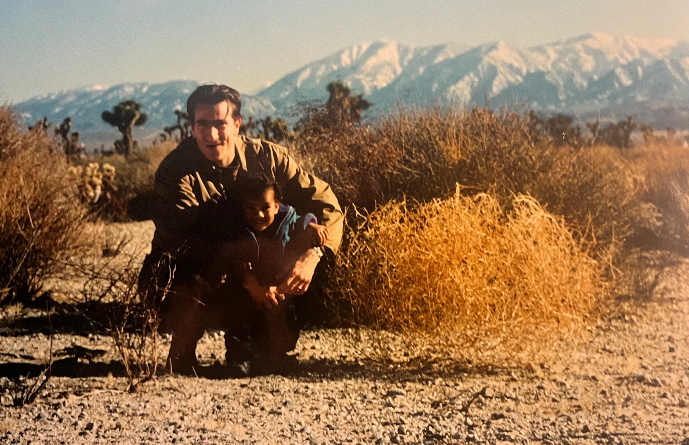
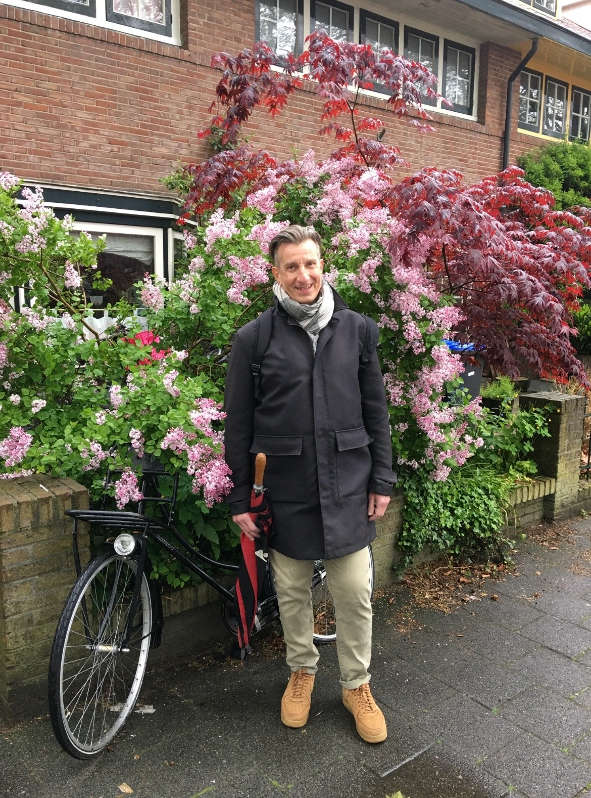
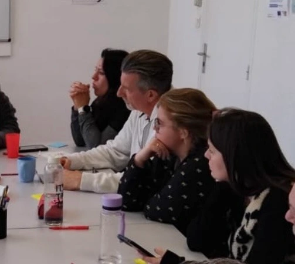
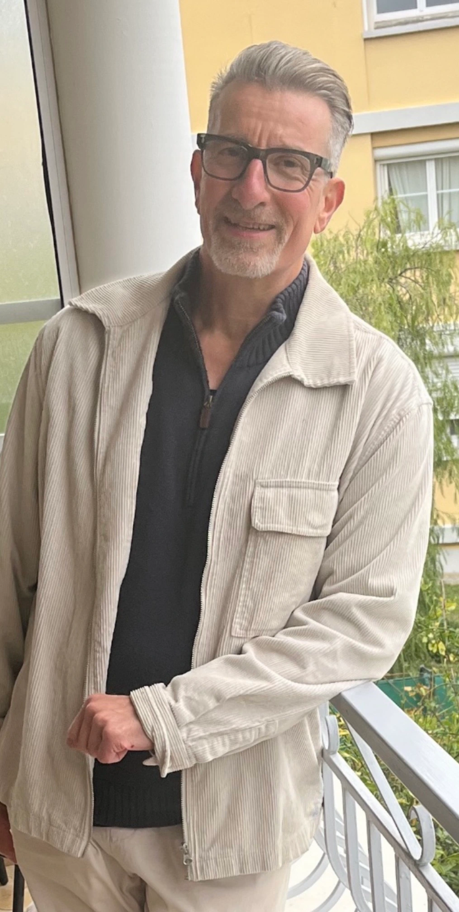
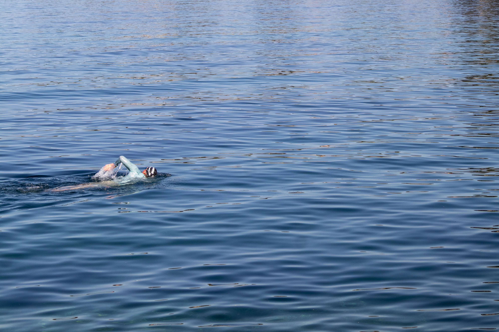

My story
Building a kife.
With independence.
With confidence.
With determination.
My story is not one of a sudden break.
It began taking shape very early, through encounters, cultures and responsibilities.
One belief has remained intact : it is always possible to build what comes next.


The first foundations
Building the first foundations.
From a very young age, I learned to rely on myself. This independence did not mean moving forward alone, but rather observing, understanding and finding solutions when the path ahead had not yet been mapped out.
This way of looking at the world developed my curiosity, my sense of responsibility and a deep belief in everyone's ability to draw on their own resources.
Over time, I came to understand that a life is never built alone. The people we meet, the trust we place in one another and the responsibilities we share have become the true foundations of everything I have undertaken.
Vingt années aux États-Unis
Coming of age abroad.
I grew up on the Mediterranean coast in the South of France, where the sea, movement and freedom already played an essential part in my daily life.
Moving to the United States was never about running away. It was a choice to broaden my horizons and forge my own path.
Ten years in New York, followed by another ten in San Francisco, profoundly shaped the adult I became. There, I developed initiative, independence, adaptability and the confidence to move forward even when the path ahead was not yet entirely clear.
Those years also taught me to grow through contact with very different cultures, backgrounds and ways of thinking. Openness to the world was no longer simply a matter of curiosity; it became a way of living and working.


Nine years in teh Netherlands
A different way of moving forward.
After the United States, the Netherlands did not represent a new beginning, but rather the natural continuation of a life already built across several cultures.
Those nine years strengthened my international experience while introducing me to a different way of working and leading: more collaborative, more horizontal and more deeply rooted in listening.
Through my experiences in Amsterdam, Hilversum and the surrounding area, I worked with teams made up of many different nationalities. It confirmed my belief that cultural differences are not obstacles, but valuable resources when approached with curiosity and respect.
Without realizing it at the time, these experiences were already shaping what would, much later, become my way of supporting others.
Building with others
Les plus belles constructions sont humaines.
Over the course of my career, I held very different positions, from the most operational to those involving strategic responsibilities. Yet what I remember most are the moments when everything became more human.
What I remember are the teams. The people. The moments when trust allowed everyone to bring out the best in themselves, when differences became a strength and when challenges gave rise to new solutions.
Naturally, I often became the person others turned to to think things through, gain perspective or find clarity. Not because I had all the answers, but because I knew how to listen, connect ideas and bring out the resources already there.
Over time, I came to understand that this way of being was already at the heart of what I do today as a coach.


Continuer à construire
La transplantation n'a pas changé qui j'étais. Elle a amplifié ce qui comptait déjà.
Continuing to build
The transplant did not change who I was. It amplified what already mattered.
When heart disease became a reality, many spoke of a new beginning. I never experienced it that way.
The transplant did not erase the person I had been before. It allowed me to continue building what had already been taking shape for a long time: to keep learning, sharing, supporting others and living fully.
This experience profoundly deepened my gratitude, my ability to listen and my focus on what truly matters. It also reminded me that resilience is not a heroic act. It is a way of moving forward, a decision that takes shape day by day.
Even today, I do not see that period as a break, but as a stage that gave greater depth to the path I was already on.
Aujourd'hui
Continuer à construire.
Today, everything I undertake is part of the same journey. Each experience builds on the one before it and contributes to the same mission : to keep learning, sharing and supporting others as they build their own path.
Coaching has become the most direct expression of this mission. I support individuals, teams and leaders as they navigate transitions, responsibilities and challenges that invite them to grow. My role is not to provide ready-made answers, but to help them reconnect with their own bearings, move forward with confidence and build the next chapter of their journey.
This same mission is also expressed through Tarente Sports. Sport and the sea have always held an essential place in my life. After my heart transplant, the need to protect my skin from the sun over the long term because of immunosuppressive treatment became part of that passion. Tarente Sports was born from the meeting of these two realities : creating technical UV-protective clothing made from recycled materials, to protect people while respecting the oceans that have inspired me throughout my life.
I also write to share what life has taught me. I have always observed, questioned and connected experiences. My research, my books and my projects are part of that same process : turning lived experience into something useful, meaningful and hopeful for others.
Open-water swimming, which I practice year-round, remains a source of balance for me. It reminds me every day that we rarely move forward by fighting against the elements. We learn to understand them, respect them, and move with them. This philosophy now guides both my personal life and each of my projects.
Ultimately, whether through coaching, an entrepreneurial project, a book or a talk, the common thread remains the same : to evolve, to grow and to share. If my journey can help others build their own with greater confidence and peace of mind, then each of the experiences that have shaped my life takes on its full meaning.

What next?
Perhaps your story doesn't need to start over.
Perhaps it simply needs to be seen differently.
We sometimes tend to believe that moving forward means starting from scratch, completely changing our lives or becoming someone else. My experience has taught me otherwise.
The most valuable resources are often already there. They need to be revealed, organized, and set in motion.
If my journey can leave you with one conviction, it is this: it is always possible to build what comes next.
Epilogue
We do not always choose the paths life places before us. But we can always choose how we build our way forward.
If this story has meaning, it is not because it is exceptional. It is because it confirmed a simple belief: each of us already has more resources than we realize.
It is with this belief that I support individuals, teams and organizations today as they seek greater clarity, move forward with confidence and build the next stage of their journey.